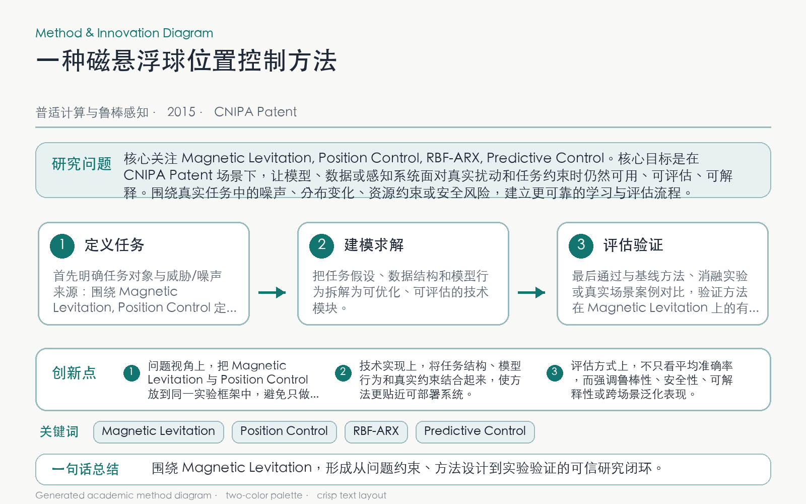

Problem
解决的问题
这篇论文属于“普适计算与鲁棒感知”方向，核心关注 Magnetic Levitation, Position Control, RBF-ARX, Predictive Control。它要解决的不是单纯提升一个指标，而是在 CNIPA Patent 场景下，让模型、数据或感知系统面对真实扰动和任务约束时仍然可用、可评估、可解释。围绕真实任务中的噪声、分布变化、资源约束或安全风险，建立更可靠的学习与评估流程。
Pervasive Computing and Robust Sensing · 2015 · CNIPA Patent
一种磁悬浮球位置控制方法
Problem
这篇论文属于“普适计算与鲁棒感知”方向，核心关注 Magnetic Levitation, Position Control, RBF-ARX, Predictive Control。它要解决的不是单纯提升一个指标，而是在 CNIPA Patent 场景下，让模型、数据或感知系统面对真实扰动和任务约束时仍然可用、可评估、可解释。围绕真实任务中的噪声、分布变化、资源约束或安全风险，建立更可靠的学习与评估流程。
Value
用于展示时，这篇论文可以放在“问题定义 - 方法设计 - 证据评估”的链条中理解。它的价值在于把 Magnetic Levitation 具体化为一个可实验验证的研究问题，并通过 Chinese Invention Patent, China National Intellectual Property Administration 的发表形态呈现该方向的代表性进展。
Generated Method Diagram
该图基于论文标题、主题关键词与中文解读内容重新绘制，用统一的学术信息图风格概括研究问题、技术路线和创新点。相比原始 PDF 页面截图，它更适合网页展示和汇报讲解。
打开原文 PDF
Technical Route
Innovation